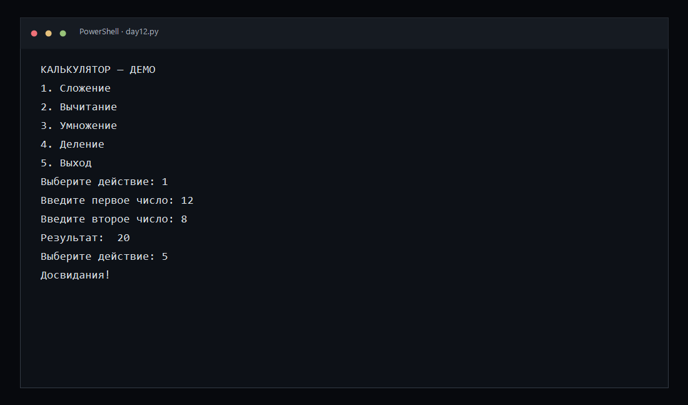
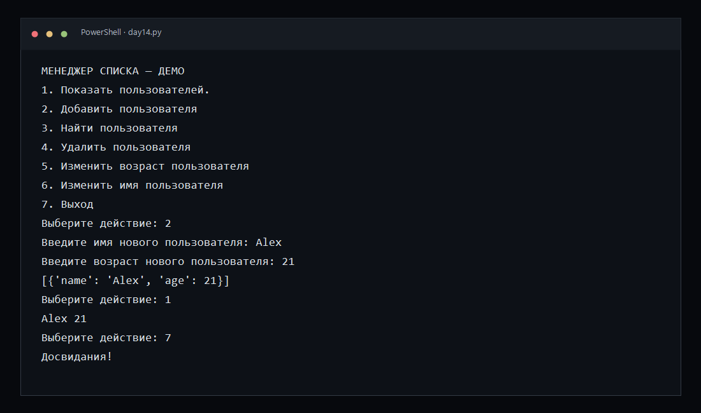
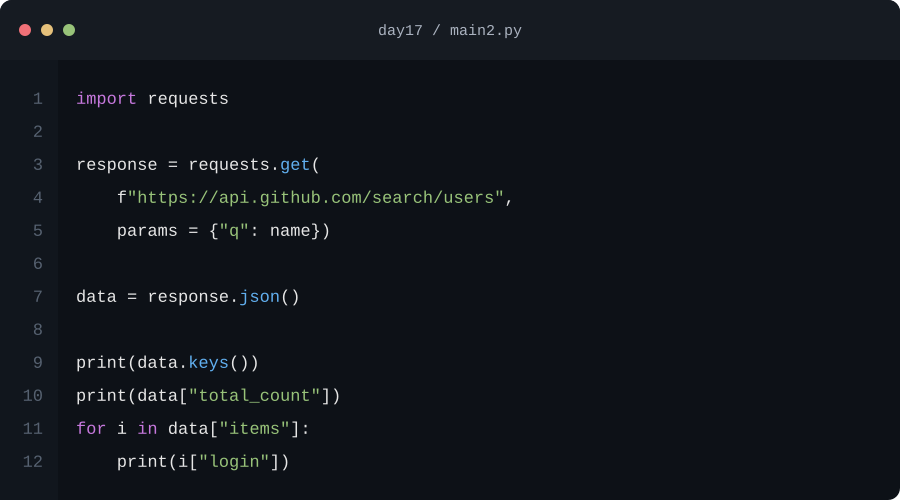
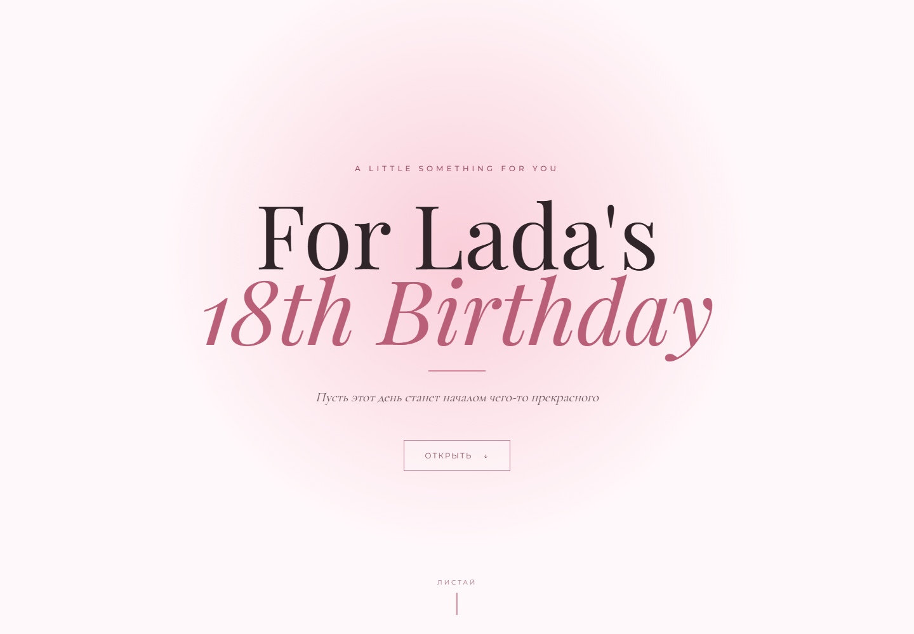
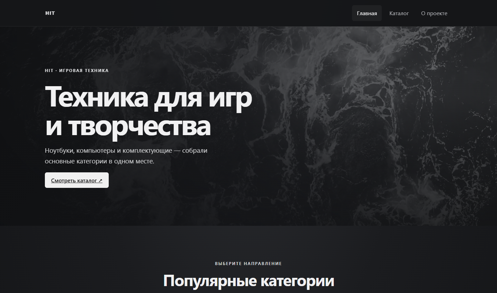

Python · консольная программа
Калькулятор с меню

Консольная программа предлагает выбрать операцию, запросить два числа и показать результат. В исходнике предусмотрены проверка деления на ноль и обработка нечислового ввода.

Практика и эксперименты
Небольшие программы и упражнения, в которых я применяю новые темы на практике.
Python · консольная программа

Консольная программа предлагает выбрать операцию, запросить два числа и показать результат. В исходнике предусмотрены проверка деления на ноль и обработка нечислового ввода.
Python · работа с JSON

Учебная программа для просмотра, добавления, поиска, удаления и редактирования записей. Данные сохраняются в JSON-файл, чтобы оставаться после закрытия программы.
Python · API

Консольный поиск обращается к GitHub API и выводит найденные аккаунты. В проекте используются HTTP-запросы и разбор ответа в формате JSON.
HTML · CSS · JavaScript

Многоэкранная интерактивная страница с плавной прокруткой, анимациями и управлением небольшими эффектами. Персональное имя и возраст оставлены с согласия адресата; музыку из копии для портфолио убрал.
Открыть проект ↗HTML · CSS · Bootstrap
Многостраничный учебный сайт с видеозаставкой, карточками категорий и отдельной страницей каталога. Я привёл тексты и навигацию в порядок, оформил страницы в общей серой гамме и адаптировал карточки для мобильных экранов.
Открыть сайт ↗ Открыть каталог ↗